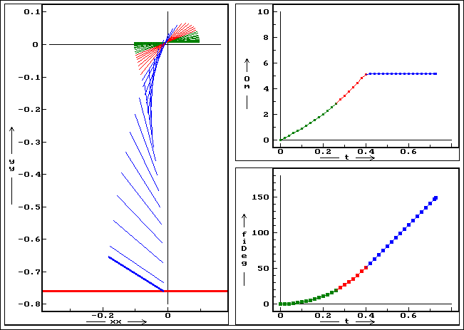
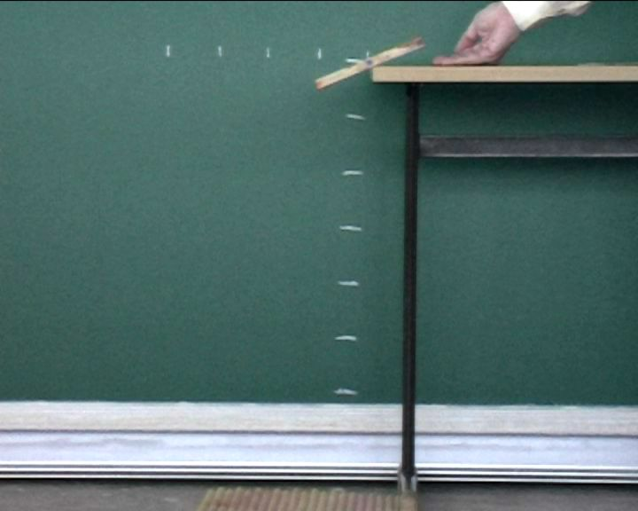
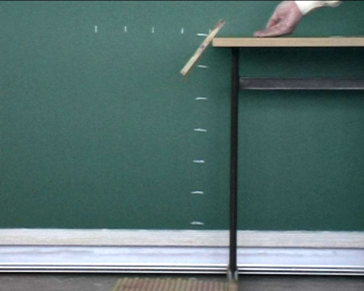
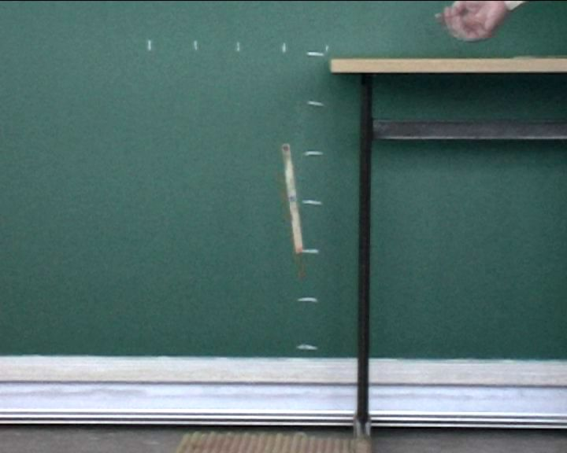
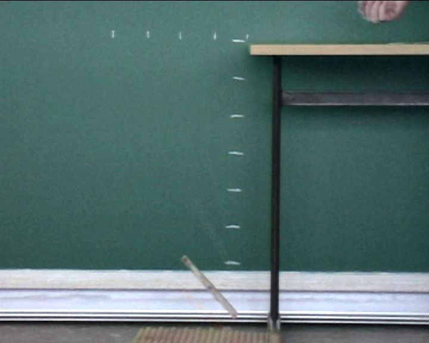
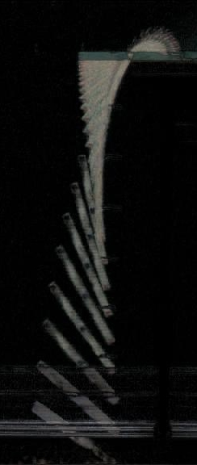
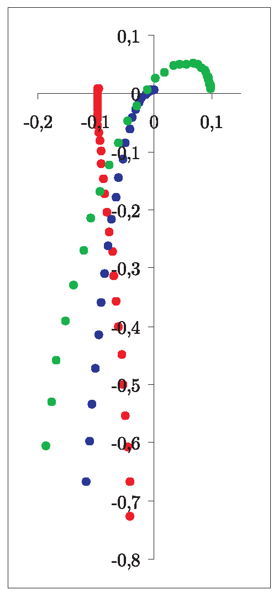

Fakt, že chleba padá na zem vždy namazanou stranou, je dobře znám, tak dobře, že zdomácněl i v jazyce jako úsloví. Je tomu tak ale opravdu jen kvůli zákonu schválnosti, nebo můžeme chování padajícího chleba vysvětlit i za pomoci fyzikálních zákonů? Řešení problému bylo předneseno na konferenci GIREP 2006 a bylo publikováno ve sborníku konference.
Problém padajícího chleba byl studován již několikrát, první výpočty najdeme v Matthewsově publikaci [1], později je zpřesnil Bacon a kol. [2]. Bacon také použil analýzu videa k určení úhlové rychlosti.
My můžeme tento matematický popis ověřit jako numerický model a také jako videoexperiment způsobem, který je přístupný studentům na úrovni základního kurzu vysokoškolské fyziky, případně i na úrovni fyzikálního semináře. Jako pomůcku s lépe definovanými rozměry, než má krajíc chleba, použijeme dřevěnou destičku délky 20 cm a necháme ji s malým přesahem padat přes hranu stolu. Přesah volíme tak malý, aby destička skutečně jen „tak-tak“ přepadla. Pak můžeme zkoumat, jak výsledek experimentu ovlivňují změny parametrů systému, konkrétně:
Pohyb destičky před opuštěním stolu můžeme rozdělit na tři fáze
Rotace kolem hrany
Nejprve se celá destička otáčí kolem hrany a to až do okamžiku, kdy je třecí síla mezi stolem a destičkou příliš
slabá na to, aby ji udržela na místě.
Klouzání
Ve druhé fázi destička klouže podél hrany, přičemž normálová složka tíhové síly přitlačující destičku ke stolu
postupně klesá až klesne na nulu. Pak ztratí destička kontakt se stolem a začne volně padat.
Volný pád
Při volném pádu se těžiště destičky pohybuje dolů rovnoměrně zrychleným pohybem a celá destička se rovnoměrně
otáčí s konstantní úhlovou rychlostí a to tak dlouho, než dopadne na zem. Pro rozhodnutí, jak destička na zem
dopadne, stačí určit úhel mezi ní a zemí v okamžiku, kdy se těžiště nachází ve výšce poloviny délky destičky nad
zemí. Níže se již její poloha nemůže změnit z „namazanou stranou vzhůru“ na dolů nebo naopak.
Pro každou fázi pohybu platí vlastní pohybové rovnice a jednotlivé fáze můžeme také pozorovat ve videozáznamu. Odvození plných pohybových rovnic a jejich numerické řešení jsou popsány v plné verzi článku v příloze.
Obrázek níže je výstupem numerického modelu. Zobrazuje časový vývoj polohy (vlevo), úhlové rychlosti (nahoře) a úhlu (dole). Pozice a body zobrazené zeleně odpovídají rotaci destičky, červené klouzání a modré volnému pádu.
Průběh klouzání a pádu krajíce chleba je příliš rychlý, než abychom jej mohli kvantitativně pozorovat bez záznamového zařízení — dataloggeru nebo ideálně videokamery. Natočíme tedy několikrát pád destičky přes hranu stolu a poté procesem videoanalýzy odečteme její pozici v každém snímku.
   Běžná videokamera snímá za sekundu 25 snímků, takže mezi dvěma snímky je časový odstup 40 ms. Pro zvýšení snímací frekvence na dvojnásobek můžeme použít metodu popsanou v předchozí kapitole.
V každém snímku za pomoci programu pro videoanalýzu odečteme souřadnice tří vyznačených bodů (střed a dva krajní body) a načteme změřené souřadnice do tabulkového procesoru, kde provedeme analýzu dat. Pro každou pozici spočteme vzdálenost těžiště od osy otáčení (tedy hrany stolu), vzdálenost destičky od osy a úhlovou rychlost. Z vypočtených hodnot můžeme rozlišit tři fáze pohybu tak, jak byly rozděleny v sekci popis pádu.
 Sada dat z videoměření. Vlevo stroboskopická fotografie sestavená z videoklipu za pomocí programu VideoStrobe, vpravo graf, ve kterém každá trojice bodů reprezentuje polohu destičky na jednom snímku. Graf je škálován v metrech.
| ω [1/s] | φ-dopad [°] | |||
|---|---|---|---|---|
| exp. | sim. | exp. | sim. | |
| samotná destička | 5,3 | 5,2 | 140 | 135 |
| vysoké tření | 4,1 | 4,7 | 140 | 153 |
| malé J | 7,2 | 7,5 | 189 | 195 |
| velké J | 4,2 | 4,2 | 110 | 114 |
Tabulka: Typické finální hodnoty ω a φ pro ruzné parametry experimentu